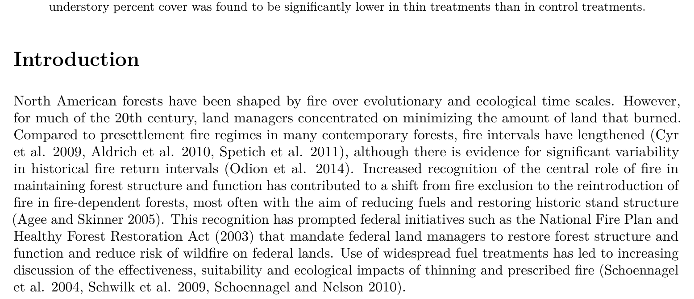

Reproducible Research Workshop
Table of Contents
1 Reproducible research
1.1 Introduction
- Three parts to today's workshop
- Reproducible research
- The original data (and original computer code) can be analyzed by an independent investigator to obtain the same results of the original study.
- My own goal: all analyses are scripted: tables, figures, parameter values in the manuscript. Nothing is done "by hand".
- Why make research reproducible?
- For your future self who is much less intelligent than your present genius self
- For your collaborators and for others to build upon
- Easily change documents when assumptions or data change
- Preserve context on why analyses were performed in certain way
- Examples
- My experience with the DOI/USDA Fire Fire Surrogate study
- My current microclimate modeling project
- Automate repetitive tasks
- Automation

- What do we need?
- Information
- Data
- Code (plain text instructions for the computer).
- Written scientific communication (manuscripts, presentations, blogs)
- Tools
- a version control system to keep track of it all
- an interpreter for a computer language (eg R). I also recommend learning how to use "the shell"
- a good text editor which will allow not only editing but interact nicely with tools 1 and 2, above. I use Emacs. I will introduce you to RStudio.
- Information
1.2 Getting started
- Open the etherpad in your web browser
- Clone the workshop repository
- If you are on a 405 machine
- double click the install github icon to install the GitHub application
- clone the workshop repo
Open a terminal and type
cd ~ git clone https://github.com/dschwilk/rr-workshop.git - OR, via GUI:
- sign into GitHub
- Select "clone repository" and search for "dschwilk/rr-workshop"
- If you are on a 405 machine
1.3 The shell
- The shell
- What is the shell?
The shell a command line interface which allows you to control your computer.
Tasks are accomplished by entering commands with a keyboard (or by running a plain text script) instead of controlling a graphical user interface.
The most popular shell is Bash ("Bourne Again SHell")
- What is a terminal?
A terminal is a program you run that gives you access to the shell. There are many different terminal programs that vary across operating systems.
- What is the shell?
- Using the shell
Open a terminal (bash)
ls cd ~/rr-workshop ls cd course-materials/examples ls echo "hello" echo "hello" > newfile.txt cat newfile.txt cd shell ls cd ..
- Full vs relative paths
pwd cd ~ pwd
- Shell command options and arguments
ls -l ls -al man ls
- Wildcards
Use tab to autocomplete!
cd ~/rr-worskop/course-materials/examples/ ls *.R ls *.r* - Finding and displaying files
find,cat,lesscd shell ls -al find . -print cat MC/MC607.csv less MC/MC607.csvSome commands in less:
key action "space" to go forward "b" to go backward "g" to go to the beginning "G" to go to the end "q" to quit - Moving and copying
mkdir alldata cp MC/*.csv alldata cp GP/*.csv alldata find . -print mv alldata all-data ls -al all-data rm all-data #oops rm -r all-data
- Counting words and lines
wc GP/*.csv MC/*.csv
One file is much shorter than others, why?
head MC/MC607.csv -n2 tail MC/MC607.csv -n2 head MC/MC606.csv -n2 tail MC/MC606.csv -n2
There must be missing data in the middle
- Let's search for a specific line
Find temperatures for measurements between 8 and 9 AM on Jan 1, 2014 in all MC locations.
grepsearches for patterns (regular expressions) in filesgrep "1/1/14 8:..:.. AM" MC/*.csv # and in all files in this folder and below: grep -r "1/1/14 8:..:.. AM" .
- The pipe
|"Pipe" the output of one command as input to another
wc GP/*.csv MC/*.csv wc GP/*.csv MC/*.csv | tail -n1 wc GP/*.csv MC/*.csv | grep "total"
1.4 R in RStudio
1.5 Quick review of R
- R as a calculator:
4.0 * 3.5 log(10) # natural log log10(10) (3 + 1) * 5 3^-1 1/0
[1] 14 [1] 2.302585 [1] 1 [1] 20 [1] 0.3333333 [1] Inf
- Assigning values to variables
- Functions
Functions are modules of code that accomplish a specific task. Functions usually take data as "arguments" and "return" a result. Once a function is written, it can be used over and over and over again. Functions can be "called" from within other functions.
- Functions in R
Arguments to R functions can be matched by position or by name. So the following calls to sd() are all equivalent
mydata <- rnorm(100) sd(mydata) sd(x = mydata) sd(x = mydata, na.rm = FALSE) sd(na.rm = FALSE, x = mydata) sd(na.rm = FALSE, mydata)
- Example: random numbers
runif(5)
[1] 0.0705746 0.7757365 0.2578603 0.3275505 0.6414583
runif(5, 0, 10)
[1] 10 0 5 10 9
floor(runif(5,0,11))
[1] 10 0 5 10 9
- Where do these functions come from?
- Scatterplots
library(ggplot2) # ?mpg head(mpg) str(mpg) summary(mpg) qplot(displ, hwy, data = mpg)
- The result
- Vectors: the heart of R
x <- 1:20 x[1] 1 2 3 4 5 6 7 8 9 10 11 12 13 14 15 16 17 18 19 20
- Working directory
getwd() # setwd(path.expand("~/") )
In Rstudio: Session…Set Working Directory
- Practice: look at Galapagos bird morphology data
- set working dir to "rr-workshop/course-materials/examples"
- Walk through code and test visualizations
2 Plain text and literate programming
2.1 Why plain text?
- One goal as scientists
To make our research as reproducible and visible as possible
- The power of plain text
- Ubiquitous
- Usually small in size
- Portable across platforms (and versions)
- Use one powerful text editing tool for everything you do.
- Version control: VC systems work best on text files (eg git)
- Manipulation of text
Most output is based on simple text file. There are two main final formats: HTML and PDF. One is pageless and one is centered on the idea of the printed page.
- What is plain text?
- Computers store numbers
- Computers store numbers in binary: 0100110 (38).
- How to represent characters ("A", "f", "%")?
- Simple idea: numeric code for each character. Originated at Bell labs in 1960
- ASCII: American Standard Code for Information Interchange (128 characters only!)
- Current standard: unicode. Basic idea: two bytes. Then expanded to more (up to 3 bytes) Enough to store every character in every language.
- Use utf-8 (a unicode encoding)
- Computers store numbers
- What you want in a text editor
- Syntax highlighting
- Braces, parenthesis matching, automatic indenting, wrapping comments
- Ability to work with multiple interpreters (R, Bash, Python, Julia . . .)
- Spell checking
And some other things you did not know you wanted: TODOs and outlining modes, exporting to HTML or PDF, web browsing, email …
2.2 Markup languages
- Markup
- Markdown
- A lightweight markup language (less complicated and less powerful than \LaTex, for example
- The standard for integrating text and results with R code using RMarkdown files and
knitr - standard source format for structured text in many places now (GitHub, jekyll web sites, etc
- "Academic markdown" is maturing with support for using reference databases, citation styles, etc.
- Markdown example
## My Paper ## I just discovered that: $$e=Mc^2$$ ### My Table ### | Left | right | center | |------|-------|--------| | data | 0.01 | 2.3 |
- Which renders as
- Text markup
*italic*, **bold** unordered list: - item 1 - item 2 - item 3 Ordered list: 1. item 1 2. item 2 3. item 3
- Headings
Heading1 ======== # Heading1 # Heading2 -------- ## Heading 2 ## ### Heading 3 ###
- Markdown links
Links: http://daringfireball.net/projects/markdown/syntax [Markdown syntax](http://daringfireball.net/projects/markdown/syntax) [Markdown syntax][mkdn] [mkdn]: http://daringfireball.net/projects/markdown/syntax
- Markdown math
Just use LateX math!
$$\frac{n!}{k!(n-k)!} = \binom{n}{k}$$
- Markdown math
Inline equations just need a single
$In ecology, "true" species diversity is: $ D_q = \frac{1}{\sqrt[q-1]{\sum_{i=1}^R{p_{i} p_{i}^{q-1}}}}
- Managing references
- A quick example
Introduction ============ North American forests have been shaped by fire over evolutionary and ecological time scales. However, for much of the 20th century, land managers concentrated on minimizing the amount of land that burned. Compared to presettlement fire regimes in many contemporary forests, fire intervals have lengthened [@Cyr+Gauthier+etal-2009; @Spetich+Perry+etal-2011; @Aldrich+Lafon+etal-2010], although there is evidence for significant variability in historical fire return intervals [@Odion+Hanson+etal-2014]. Increased recognition of the central role of fire in maintaining forest structure and function has contributed to a shift from fire exclusion to the reintroduction of fire in fire-dependent forests, most often with the aim of reducing fuels and restoring historic stand structure [@Agee+Skinner-2005]. This recognition has prompted federal initiatives such as the National Fire Plan and Healthy Forest Restoration Act (2003) that mandate federal land managers to restore forest structure and function and reduce risk of wildfire on federal lands. Use of widespread fuel treatments has led to increasing discussion of the effectiveness, suitability and ecological impacts of thinning and prescribed fire [@Schoennagel+Veblen+etal-2004; @Schoennagel+Nelson-2010; @Schwilk+Keeley+etal-2009].
- Result

- A quick example
- Pandoc
So how do we glue everything together and produce wonderful htmls and pdfs out of thin air?
With pandoc: http://johnmacfarlane.net/pandoc/
- An RMarkdown workflow
Figure from Kieran Healy: http://kieranhealy.org/resources/
- RMarkdown in RStudio

2.3 Literate programming
- Literate programming with RStudio
Can aid in reproducible research: Simply combine text and code
- Plain R script
- Simplest. This is how I teach my graduate programming course. Encourage use of comments and require that script run from top to bottom without error. In RStudio, one can compile this to an RMarkdown file (Compile Notebook command).
- knitr
- http://yihui.name/knitr/. R package. Mix text and code and "knit" to output. Can work with LaTeX (rnw files) and with RMarkdown (Rmd).
- RMarkdown and knitr
knitris an R package that can interpret .rnw files (LaTeX) or RMarkdown files (.Rmd) with R code blocks and "knit" them into LaTeX or markdown (.md) files that can be processed to html, pdf, etc (eg with pandoc) - RMarkdown example:
RMarkdown example ================= ## some code ```{r mpg-data-plot, fig.width=4, fig.height=4} library(ggplot2) qplot(displ, hwy, data=mpg) ``` # Another heading Some data: ```{r} head(mpg) ``` - Result:
- Practice on birdd.Rmd
- Best practices
Reproducible research in R (see Yihui Xie's Dynamic Documents with R and knitr)
- Use relative, not absolute, file paths and keep a whole project in one directory whenever possible
- Don't change the working directory
- Compile your reports in a clean R session to test that they really run (existing R objects gotcha)
- Avoid any commands needing human interaction, and avoid relying on environment variables outside the code; the whole script should be automated and self-contained
- Include instructions on running the document for your collaborators (or future self)
3 Version Control
3.1 What is version control?
- Why use version control?
- You already use some sort of version control
- File naming schemes (eg
my-file-July18-2013.doc) or by copying folders around - Simple but error-prone
- Does not help with branching, collaboration
- File naming schemes (eg
- A version control system (VCS) allows you to:
- revert files back to a previous state
- revert the entire project back to a previous state
- review changes made over time
- see who last modified something that might be causing a problem, who introduced an issue and when
- You already use some sort of version control
- Local version control systems (VCS)
- Centralized VCS

- Distributed VCS

 see
see 3.2 git
- Configuring
git config --global user.name "Dylan Schwilk" git config --global user.email "dylan@schwilk.org"
- Getting a "repo" (repository)
cd ~ mkdir newrepo cd newrepo git init touch README.md ls .git -al
- What happened?
Hidden directory called
.git. ├── .git │ ├── branches │ ├── config │ ├── description │ ├── HEAD │ ├── hooks │ │ ├── applypatch-msg.sample │ │ ├── commit-msg.sample │ │ ├── post-update.sample │ │ ├── pre-applypatch.sample │ │ ├── pre-commit.sample │ │ ├── prepare-commit-msg.sample │ │ ├── pre-push.sample │ │ ├── pre-rebase.sample │ │ └── update.sample │ ├── info │ │ └── exclude │ ├── objects │ │ ├── info │ │ └── pack │ └── refs │ ├── heads │ └── tags └── README.md
- Checking status
git status
On branch master Initial commit Untracked files: (use "git add <file>..." to include in what will be committed) README.md nothing added to commit but untracked files present (use "git add" to track) - git commands
- staging files
git add . git status
On branch master Initial commit Changes to be committed: (use "git rm --cached <file>..." to unstage) new file: README.md - Committing changes
git commit -m "initial commit" git statusOn branch master nothing to commit, working directory clean
- git commit
A commit is a snapshot taken from the index (staging area) not from the working directory!
- What exists now?
- Clone repo
git clone https://github.com/schwilklab/protocols.git cd protocols ls./ ../ html/ lab-org/ methods/ README.md safety/
- A basic workflow
- Edit files
- Stage the changes (git add)
- Review the changes (git diff)
- Commit the changes (git commit)
- The git repository
- git log
git log --pretty=oneline --abbrev-commit -10
d2ec17b Reduce markup lecture e4d405f Add folder for tangled session files bb2d29e Add shell (Bash) examples and some data 261af83 Clean up birdd files e289d7e Minor edit f2820d3 Scatterplot fig in birdd example 75a4be6 Add slides on Bash shell 66c9a7f Add etherpad link for workshop e23b559 Suggest getting github.com account 7e6a6df Add time and date for workshop
- git diff
-
git diff - difference between working directory and index (staging area)
-
git diff --staged - difference between index and last commit
With right options, diff can show changes between any two commits, any two files, etc.
-
- git diff example
Try:
git diff HEAD~1
- Diffs on GitHub

- Practice on rr-workshop
- open birdd.Rmd
- Explore data together and commit changes

3.3 Working with branches
- Branches
A branch represents an independent line of development.
- Show and create branches
- Using branches
- Switch branches
git checkout <existing-branch>
- Merge
Merging is Git's way of putting a branched history back together again.
- Fast-forward merge
- Three-way merge
- Example fast-foward merge
# Start a new feature git checkout -b new-feature master # Edit some files git add <file> git commit -m "Start a feature" # Edit some files git add <file> git commit -m "Finish a feature" # Merge in the new-feature branch git checkout master git merge new-feature git branch -d new-feature
- Merge vs rebase
3.4 Working with remotes
- What is a "remote"
- a version of the repository that hosted somewhere on the internet.
- Remotes have a url (https or ssh), but the can also have names.
- It is common to have only one remote at it is named "origin"
- GitHub
We use GitHub for hosting, so most of of your local repos will be associated with a remote named "origin" and a url something like
git@github.com:schwilklab/CSC-sky-island-forest.git - Working with remotes
When you clone from a remote, git remembers and calls that remote "origin". You can look at .git/config or, better use git commands to view:
git remote -v
origin git@github.com:dschwilk/rr-workshop.git (fetch) origin git@github.com:dschwilk/rr-workshop.git (push)
- Adding a remote
If you need to add a remote to an existing repository:
git remote add rem2 git@github.com:dschwilk/software-tools-course.git
- Fetching and pulling
- git push
git push <remote> <branch name> eg: git push origin master or just: git push
This works if none else has pushed changes to that remote since you last pulled. If there is an error, you will need to pull (fetch and merge) first.
- git and GitHub
idea of "forking"